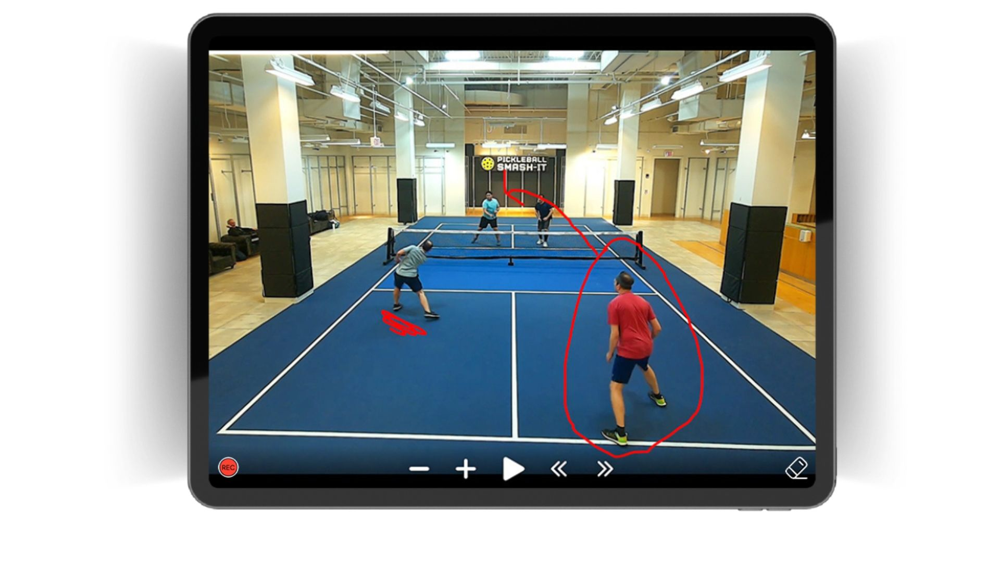

Ahora toca hablar de lo buenos que somos en Save My Play

Seré lo más breve que pueda.
Estamos en más de 1.600 pistas en todo el mundo.
La Federación Americana de Pádel nos elige para grabar sus torneos FIP.
Y a la Federación Americana de Tenis les retransmitimos cada finde en directo en sus más de 100 pistas en su sede central.
Aún así no llegamos a 10 personas en la empresa.
Y eso es lo que los clubs valoran.
La cercanía. Si algo falla, nos volcamos en solucionarlo
No se pierde entre la cadena de mando.
Por otro lado, no necesitamos hacer las cosas difíciles para impresionar al jefe.
Si con dos botones tienes las cámaras funcionando, no ponemos tres.